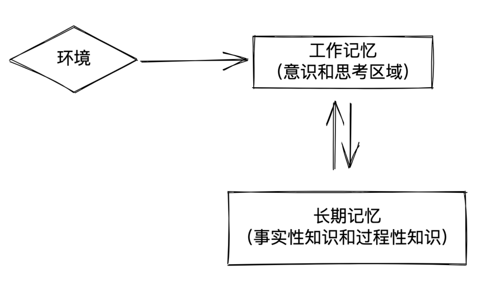
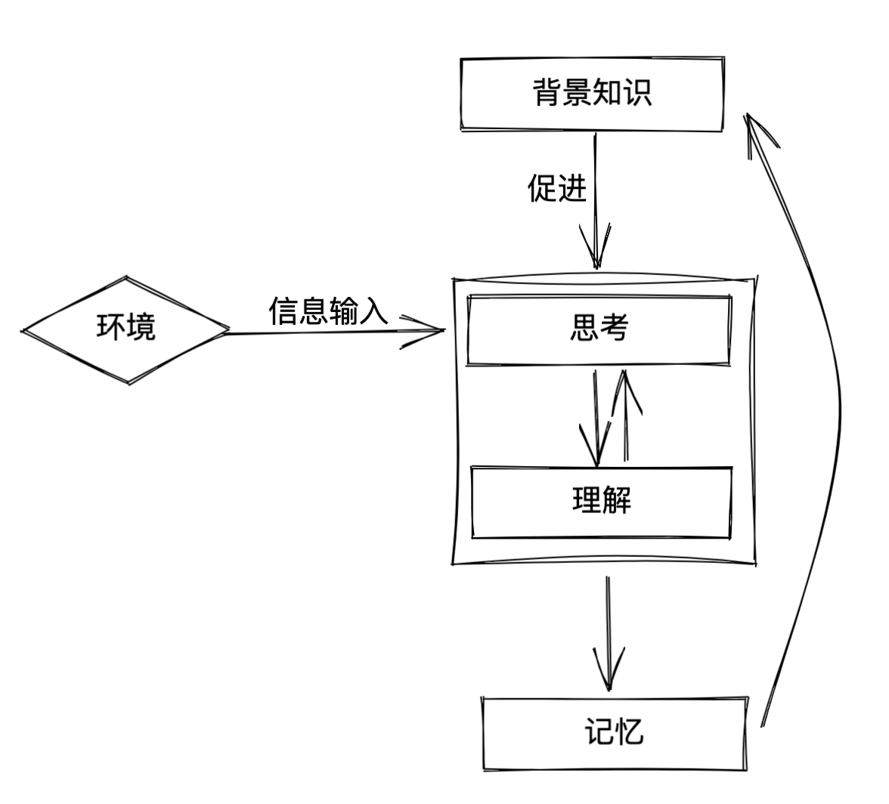

最近读完了 Daniel T. Willingham 所写的《为什么学生不喜欢上学?》。这是介绍教育原理的书，旨在给教师提供教学意见。其中的许多内容直观地解释了「学习」这个过程中所运用到的「认知原理」。我们自然没有提升教学水平的任务，但它同样能为我们学习或向他人有效传递信息提供参考。
认知原理
全书共提到了9个认知原理，分别是：
- 人类具有好奇心，但大脑会尽力避免思考
- 事实性的知识先于技能
- 记忆是思考的残留物
- 我们依靠已知内容理解新的内容
- 练习才能熟练掌握
- 学习早期的认知力与晚期的截然不同
- 学生在学习方面相似多过差异
- 学生智力上的差异可以通过更持久的努力改变
- 教学水平也需要通过练习提高
此处并不期待制作出这本书的知识总结，而是摘取部分我觉得较为实用的要点进行回顾。
我们如何思考
下图是一张简化的大脑运作模型，我们从环境（外部信息源）获取信息进入工作记忆（工作区），利用工作记忆进行思考；我们还会从长期记忆（内部信息源）提取与工作相关的信息到工作区，协助处理信息。工作记忆的空间有限，且没有什么已知的好办法扩展它。一旦工作记忆变得过于拥挤，思考就会异常艰难。因此，思考的成功取决于四个方面：
- 环境中的信息
- 长期记忆中的信息
- 长期记忆中的步骤
- 工作记忆的空间大小

简化的大脑运作模式图
工作记忆的空间大小不是由内容的文字多少决定，而是由有意义的片段决定
长期记忆中的背景知识可以帮助把大块的内容合并成有意义的信息单元
背景知识使合并成为可能，它使得片段间的联系变得容易，提高了工作记忆的空间利用效率，最终使理解变得容易。
只有好奇并不使人思考
这并不是说好奇不重要，好奇心依然是我们最好的老师。大脑天生懒惰，当我们能侥幸通过某种方式完成任务时，便不会再去积极思考，反而会依赖记忆，在下次任务出现时依照记忆行动。思考的过程耗费相当的精力，只有当我们明白解决某一问题后会带来愉悦感时，我们才会喜欢思考。太过简单或太过困难的问题都不会让人开心，因此只有恰当地依照对方的背景知识，提出合适的问题，才能促成对方积极思考。
背景知识帮助我们思考
思考是以新的方式组合信息，这既包含随时可以从外部查询的信息，又包含长期记忆中的信息。外界直接获取的信息储存在短期的工作记忆中。我们熟悉的信息不会占用太多工作记忆，因为大脑可以根据长期记忆将信息组合成新的单元进行暂时存放；不熟悉的新内容则会占据大量工作记忆，导致难以思考。但如果能在查找时，将新获得的信息与之前的信息建立关联，可以帮助记忆，减少在工作记忆的空间占用。
背景信息还帮助我们进行交流。在与他人沟通时，为了避免过度冗长，我们通常会适当省略一些信息。事无巨细将每个细节讲出来会导致啰嗦，也会令听者失去耐心；相反，如果过度省略信息，在双方知识不对等的情况下，会导致无法互相理解，反而加剧交流障碍。
记忆是思考的残留
如果我们仔细地思考过一件事情，就更有可能之后再次想起它，思考让大脑明白某件事是应该被存储的。记忆不是我们想要记住或尝试记住的事，记忆是我们所思考的事。
我们在已知的环境中理解新事物
学习知识的过程在于用相关联的事实来解释一个中心概念，而不是建立事实性的知识点清单。思考的过程就是在为知识点建立联系，这与记住知识点本身同样重要；理解一个新的概念就是让恰当的已有概念进入工作记忆，并加以重新组合，因此理解其实就是记忆。

可以通过类比等方法帮助理解抽象的概念，但类比也需要恰当地选择例子，如果受众对于例子过于不了解，那么此类比也难以帮助其理解问题。
一个问题通常具有表层结构和深层结构。表层的结构是直观的，但对于解决问题可能帮助不大；正确辨别问题的深层结构有助于解决问题，然而一个问题可能有多种深层结构，因而难以正确处理它。
将抽象概念利用类比转化成一个具象事件的过程，实际上是在把问题的深层结构与一个好理解的表层结构建立联系。
何为「表层结构」与「深层结构」：以小学奥数题为例，一个水池一边排水一边进水，问多久水池能装满。如果只看到表层结构中的水池、水龙头，是不会将它与先前例题中牛吃草的吃草速度、牧草生长速度联系起来的；而这个问题的深层结构是「速度差」，即进水与排水的速度差，或是吃草与长草的速度差，只有把握了这一深层结构，才能解决这一类而非这一个具体的问题；因为表层结构是多变的，而深层结构间可能有共通之处。
因此在不能把问题正确地由表层结构连结到恰当的深层结构上时，便无法利用已有知识解决问题。
通过接触更多例子，或是比较不同的例子，可以帮助我们建立对深层结构（抽象概念）的理解，此即练习的作用。
练习，还是练习
练习使得在进行底层的基础过程时，得以不假思索，为更高级更深入的过程提供思考所需的空间；不恰当的练习设计会磨灭积极性，所以需要恰当选择练习的内容与形式。
何为「基础过程」：所谓基础也就是人在某一个领域一遍又一遍重复的事情，通过练习使其达到自动化，它们为日后更高级的工作奠定了基础。例如乒乓球员练习发球，通过练习使其几乎不占用额外的精力，让注意力得以更多地转移到比赛的其他过程。
由于工作空间区域有限且无法通过某种方式扩展，因此就得：
- 采取某种方式压缩其中的内容
- 提高工作记忆中操纵信息的效率
实际上这两者都是从长期记忆中提取一部分到工作区中，因此只占用工作区内的一小部分。
练习可以使记忆更长久，而分散练习有助于记忆维持更长的时间，同时让学生有更多的机会思考如何将学到的东西加以应用，即练习如何将问题与恰当的知识点建立联系的过程。要达到自动化需要很多练习，最好的办法是既分散联系的时间，又分散练习的环境，尽量多设计有创意的方法来练习最关键的技巧，使得能够在更高阶的环境中学到基本技能。
一些额外的建议
与人搭档合作，一同学习是个好办法。
但除非被问及，否则不要建议别人该做什么。你不会希望做一个什么都懂的圣人。如果你的搭档想咨询你的建议，他会来问你的，这时候你当然可以畅所欲言了。但是在他问你之前，当好一个谨慎的、支持的旁观者，不要以为自己是万能的协调者，不管你多有信心、解决方法多好都不要插手。